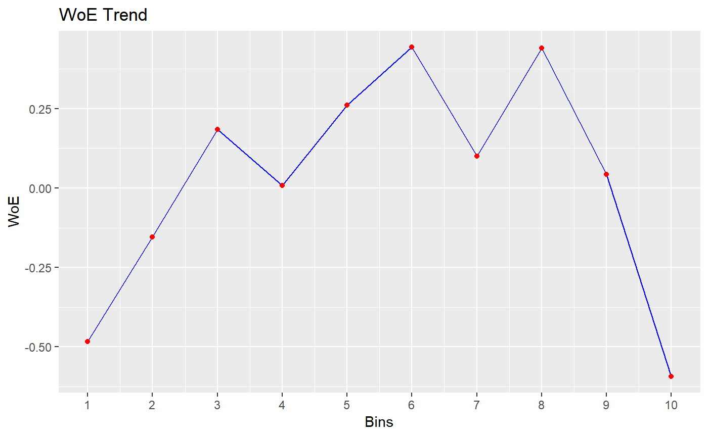
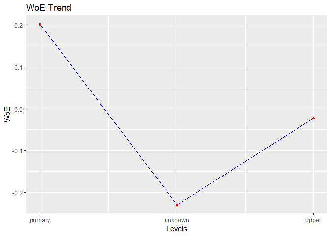
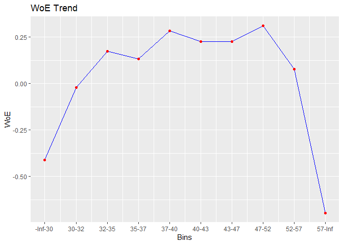
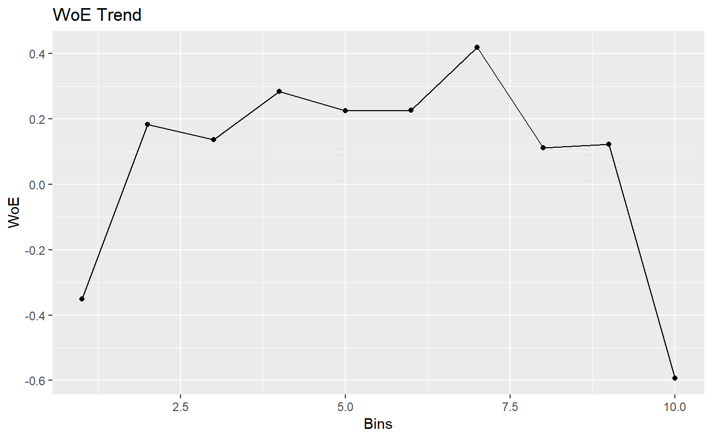
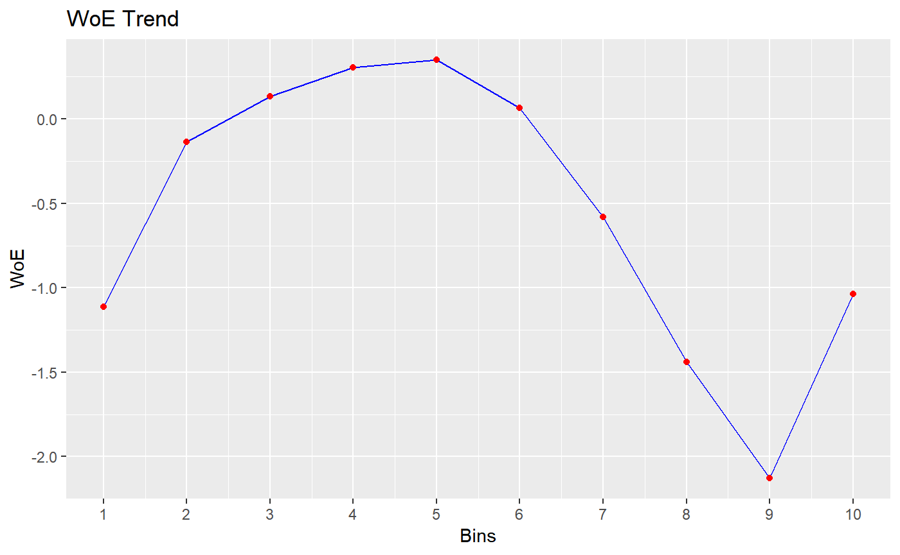

Tools for binning data
Installation
# Install rbin from CRAN
install.packages("rbin")
# Or the development version from GitHub
# install.packages("devtools")
devtools::install_github("rsquaredacademy/rbin")Usage
Manual Binning
bins <- rbin_manual(mbank, y, age, c(29, 31, 34, 36, 39, 42, 46, 51, 56))
bins
#> Binning Summary
#> ---------------------------
#> Method Manual
#> Response y
#> Predictor age
#> Bins 10
#> Count 4521
#> Goods 517
#> Bads 4004
#> Entropy 0.5
#> Information Value 0.12
#>
#>
#> cut_point bin_count good bad woe iv entropy
#> 1 < 29 410 71 339 -0.483686036 2.547353e-02 0.6649069
#> 2 < 31 313 41 272 -0.154776266 1.760055e-03 0.5601482
#> 3 < 34 567 55 512 0.183985174 3.953685e-03 0.4594187
#> 4 < 36 396 45 351 0.007117468 4.425063e-06 0.5107878
#> 5 < 39 519 47 472 0.259825118 7.008270e-03 0.4383322
#> 6 < 42 431 33 398 0.442938178 1.575567e-02 0.3899626
#> 7 < 46 449 47 402 0.099298221 9.423907e-04 0.4836486
#> 8 < 51 521 40 481 0.439981550 1.881380e-02 0.3907140
#> 9 < 56 445 49 396 0.042587647 1.756117e-04 0.5002548
#> 10 >= 56 470 89 381 -0.592843261 4.564428e-02 0.7001343
# plot
plot(bins)
Combine Factor Levels
# combine levels
upper <- c("secondary", "tertiary")
out <- rbin_factor_combine(mbank, education, upper, "upper")
table(out$education)
#>
#> upper unknown primary
#> 3651 179 691
# bins
bins <- rbin_factor(out, y, education)
bins
#> Binning Summary
#> ---------------------------
#> Method Custom
#> Response y
#> Predictor education
#> Levels 3
#> Count 4521
#> Goods 517
#> Bads 4004
#> Entropy 0.51
#> Information Value 0.01
#>
#>
#> level bin_count good bad woe iv entropy
#> 1 upper 3651 426 3225 -0.02275738 0.0004219212 0.5197428
#> 2 primary 691 66 625 0.20109064 0.0057178780 0.4546110
#> 3 unknown 179 25 154 -0.22892949 0.0022651110 0.5833603
# plot
plot(bins)
Quantile Binning
bins <- rbin_quantiles(mbank, y, age, 10)
bins
#> Binning Summary
#> -----------------------------
#> Method Quantile
#> Response y
#> Predictor age
#> Bins 10
#> Count 4521
#> Goods 517
#> Bads 4004
#> Entropy 0.5
#> Information Value 0.12
#>
#>
#> cut_point bin_count good bad woe iv entropy
#> 1 < 29 410 71 339 -0.483686036 2.547353e-02 0.6649069
#> 2 < 31 313 41 272 -0.154776266 1.760055e-03 0.5601482
#> 3 < 34 567 55 512 0.183985174 3.953685e-03 0.4594187
#> 4 < 36 396 45 351 0.007117468 4.425063e-06 0.5107878
#> 5 < 39 519 47 472 0.259825118 7.008270e-03 0.4383322
#> 6 < 42 431 33 398 0.442938178 1.575567e-02 0.3899626
#> 7 < 46 449 47 402 0.099298221 9.423907e-04 0.4836486
#> 8 < 51 521 40 481 0.439981550 1.881380e-02 0.3907140
#> 9 < 56 445 49 396 0.042587647 1.756117e-04 0.5002548
#> 10 >= 56 470 89 381 -0.592843261 4.564428e-02 0.7001343
# plot
plot(bins)
Equal Frequency Binning
Equal-frequency bins keep tied values together. Each empirical quantile and all values tied with it stay in the lower group; the next distinct value starts the next group. Sizes are approximate, and a message reports fewer bins when ties collapse cuts. Dummy counts match the non-missing training summary.
bins <- rbin_equal_freq(mbank, y, age, 10)
bins
#> Binning Summary
#> ------------------------------------
#> Method Equal Frequency
#> Response y
#> Predictor age
#> Bins 10
#> Count 4521
#> Goods 517
#> Bads 4004
#> Entropy 0.5
#> Information Value 0.11
#>
#>
#> lower_cut upper_cut bin_count good bad good_rate woe iv
#> 1 -Inf 30 521 85 436 0.16314779 -0.41201528 2.287466e-02
#> 2 30 32 386 45 341 0.11658031 -0.02178628 4.086635e-05
#> 3 32 35 582 57 525 0.09793814 0.17334073 3.617176e-03
#> 4 35 37 374 38 336 0.10160428 0.13251873 1.380198e-03
#> 5 37 40 497 44 453 0.08853119 0.28469623 7.980172e-03
#> 6 40 43 396 37 359 0.09343434 0.22539821 4.078267e-03
#> 7 43 47 461 43 418 0.09327549 0.22727505 4.823562e-03
#> 8 47 52 474 41 433 0.08649789 0.31015940 8.944433e-03
#> 9 52 57 441 47 394 0.10657596 0.07919704 5.933844e-04
#> 10 57 Inf 389 80 309 0.20565553 -0.69569162 5.396205e-02
#> entropy
#> 1 0.6417872
#> 2 0.5194505
#> 3 0.4624254
#> 4 0.4740605
#> 5 0.4315480
#> 6 0.4478305
#> 7 0.4473095
#> 8 0.4246709
#> 9 0.4895008
#> 10 0.7330960
colSums(rbin_create(mbank, age, bins)[-seq_along(mbank)])
#> age_<_30 age_<_32 age_<_35 age_<_37 age_<_40 age_<_43 age_<_47 age_<_52
#> 521 386 582 374 497 396 461 474
#> age_<_57 age_>=_57
#> 441 389
# plot
plot(bins)
Winsorized Binning
bins <- rbin_winsorize(mbank, y, age, 10, winsor_rate = 0.05)
bins
#> Binning Summary
#> ------------------------------
#> Method Winsorize
#> Response y
#> Predictor age
#> Bins 10
#> Count 4521
#> Goods 517
#> Bads 4004
#> Entropy 0.51
#> Information Value 0.1
#>
#>
#> cut_point bin_count good bad woe iv entropy
#> 1 < 30.2 723 112 611 -0.3504082 0.0224390979 0.6219926
#> 2 < 33.4 567 55 512 0.1839852 0.0039536848 0.4594187
#> 3 < 36.6 573 58 515 0.1367176 0.0022470488 0.4728562
#> 4 < 39.8 497 44 453 0.2846962 0.0079801719 0.4315480
#> 5 < 43 396 37 359 0.2253982 0.0040782670 0.4478305
#> 6 < 46.2 461 43 418 0.2272751 0.0048235624 0.4473095
#> 7 < 49.4 281 22 259 0.4187793 0.0092684760 0.3961315
#> 8 < 52.6 309 32 277 0.1112753 0.0008106706 0.4801796
#> 9 < 55.8 244 25 219 0.1231896 0.0007809490 0.4767424
#> 10 >= 55.8 470 89 381 -0.5928433 0.0456442813 0.7001343
# plot
plot(bins)
Equal Length Binning
bins <- rbin_equal_length(mbank, y, age, 10)
bins
#> Binning Summary
#> ---------------------------------
#> Method Equal Length
#> Response y
#> Predictor age
#> Bins 10
#> Count 4521
#> Goods 517
#> Bads 4004
#> Entropy 0.5
#> Information Value 0.17
#>
#>
#> cut_point bin_count good bad woe iv entropy
#> 1 < 24.6 85 24 61 -1.11418623 0.0347480126 0.8586371
#> 2 < 31.2 822 106 716 -0.13676519 0.0035843196 0.5545619
#> 3 < 37.8 1133 115 1018 0.13365680 0.0042514380 0.4737339
#> 4 < 44.4 943 82 861 0.30436899 0.0171748162 0.4262287
#> 5 < 51 623 52 571 0.34913923 0.0146733167 0.4142794
#> 6 < 57.6 612 66 546 0.06595797 0.0005741022 0.4933757
#> 7 < 64.2 229 43 186 -0.58245971 0.0213871054 0.6967893
#> 8 < 70.8 34 12 22 -1.44087046 0.0255269312 0.9366674
#> 9 < 77.4 25 13 12 -2.12704897 0.0471100183 0.9988455
#> 10 >= 77.4 15 4 11 -1.03540535 0.0051663529 0.8366407
# plot
plot(bins)
Getting Help
If you encounter a bug, please file a minimal reproducible example using reprex on GitHub. For questions and clarifications, use StackOverflow.
Code of Conduct
Please note that the rbin project is released with a Contributor Code of Conduct. By contributing to this project, you agree to abide by its terms.